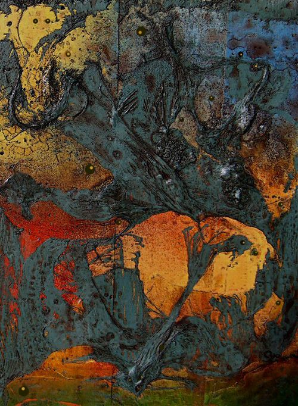

Editorial 
The End of Days was the set theme, and the Creekish authors rose rapturously to the Apocalyptic challenge. We editors are always astounded by what our inventive authors imagine and write into textual being; never more so than now. How do they do it? What Daemon of Invention possesses and inspire them to create such astounding verse? Our poets saw the End of Days everywhere, from the micro-particular personal grain of sand, to the large and public glories of our blood and state, and beyond to the macro-cosmic universal Primum Mobile. At every level, as the World ends, the poets astound.
The voyage of the tiny, wired Shit Creek canoe is nearing its end too. The reaches opened before us and closed behind, as if the forest had stepped leisurely across the water to bar the way for our return. We have penetrated deeper and deeper into the heart of darkness. It is very quiet in here.
This naughty project, this tattered, grubby raggle-taggle Shit Creek Review, printed on dirt-cheap pixels by our team of slightly demented pilgrims, has constituted a tropical voyage, beginning with its joking launch as a facetious Non-Serious Attempt at Poetry Journal, then quickly setting a course into the very Heart of Poetic Darkness, pressing ever onward up the blooming Creek, with the wild weeds and vegetation spreading rank behind the little paddleless canoe and its intrepid crew. Strange shrieks, tortured wails and frenzied drummings floated on the aether from out the primeval wilderness. Sometimes sticks, arrows and spears would rain and skitter across our wiry decks, but on we voyaged, ever on towards the heart of the matter, prow fearlessly thrust towards Teleology.
Uncanny events have pepper-sprayed our progress: ranting Jacks have railed against the very notion of us, only to skulk back into the riot of vegetation; canting Pundits have pompously decried our aversion to Madison-Avenue-prescribed ‘clean lines’, and derided our deliberate knock-about untidiness — and yet we did not heed, but blundered recklessly on. A ponderous, savage woman appeared on the river bank and, arms raised, hurled spells and incantations that the canoe might sink; still, without benefit of paddles, the plucky and unsinkable barbed-wire canoe relentlessly voyaged towards this imminent End of Days.
Which we have now attained. We thank all those who have aided and abetted the Shit Creek Corporation’s Global War on Poetry — aye, and even those who have (futilely) resisted our inevitable progress. The Five Editors of the Apocalypse have steered the canoe meanderingly into the arms of the Rapture. We are ascending! Vae, puto dues fio!
May the Creek be with you!
~~~~~
Editors’ Picks from this issue:
Ann Drysdale: Pick one poem from the end of everything? I hold three favourites in my hand. Shall I end with a Bang, like Ben Rasnic’s wild, defiant biker, a Whimper like Ryder De’Ath’s lovely dissolving body? No, I’ll go with the sleek, greasy Plop of J.S MacLean’s ‘WharfRat’, a poem I loved from the first reading. That’s how it will be …
Pat Jones: My favorite poem is Richard Epstein’s ‘Apocalypse Now’. I know why it is but it would take me weeks to articulate the reason in a way that might please him.
Angela France: My pick is ‘Let My Elements Go’ by Ryder De’Ath: its alien syntax and subtle repetitions leave me feeling as if I am in an element unknown to me.
Paul Stevens: Simon Williams’ ‘A Zombie’s Take on Walnuts’ bowled me over. Its wit and persona are extraordinarily entertaining — and what a reading!
Don Zirilli: Cally Conan-Davies’ ‘A Grief of Others.’ “Grief” as a collective noun for people you don’t know. Are they Eskimos? What an imaginative, emotionally devastating poem.
~~~~~
Yet som men say in many partys of Shit Creeke that Mistah Kurtz, he nat dede, but had by the wyll of oure Lorde Baron Samedi into another place; and men say that he shall com agayne …
|